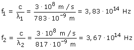
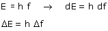
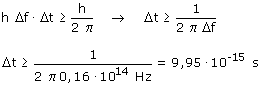

El láser teoricámente emite luz monocromática, pero el hecho de que emita la luz en breves flashes (Pulsos) provoca que la longitud de onda tenga imprecisión. La longitud de onda fluctúa entre 783-817 nm, por tanto la frecuencia también fluctuará:  La frecuencia fluctúa entre 3.67·1014-3.83·1014, por tanto la imprecisión en la frecuencia o anchura de frecuencias es: Δf = f2 - f1 = 0.16·1014 Hz Una imprecisión en la frecuencia implica una imprecisión
en la energía  Una de las indeterminaciones de Heisemberg relaciona la fluctuación de energía con el intervalo de tiempo en el que se produce:  Como poco la duración del pulso tiene que ser: 9.95·10-15 s
|